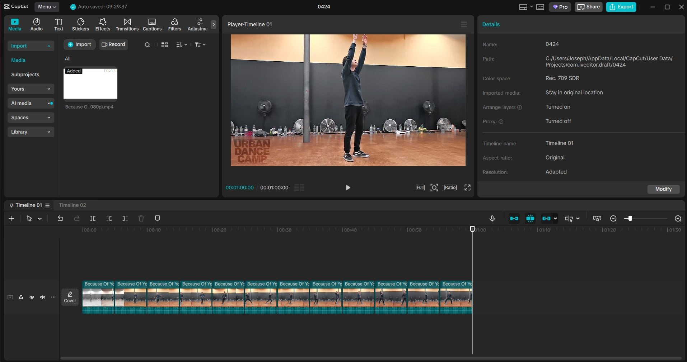
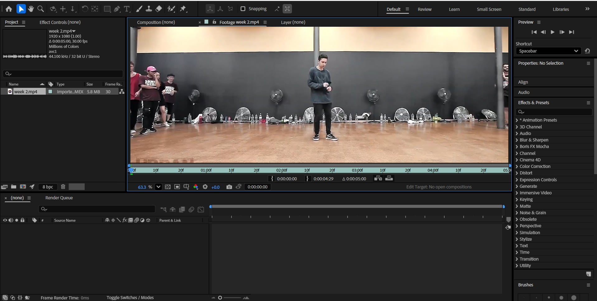
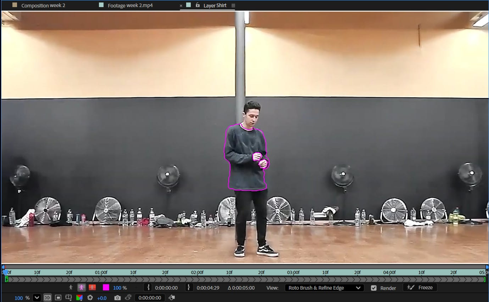
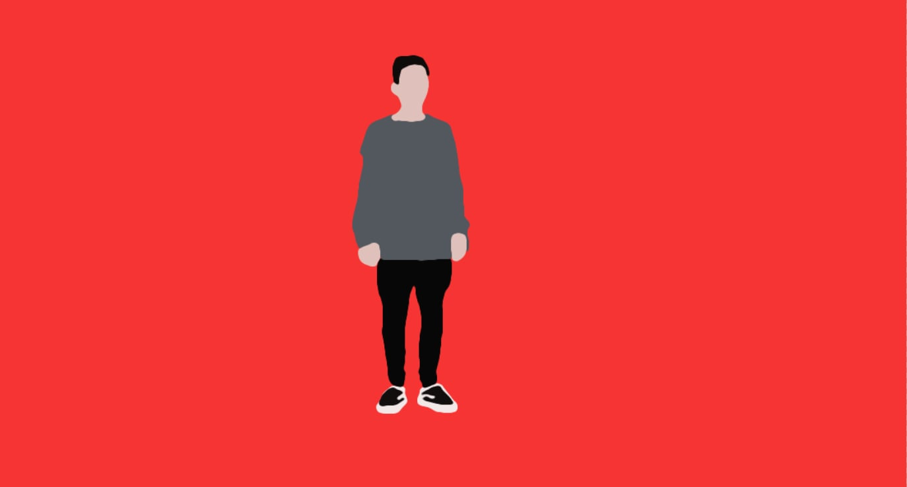
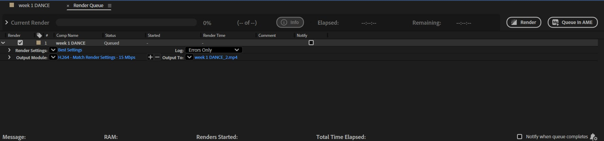
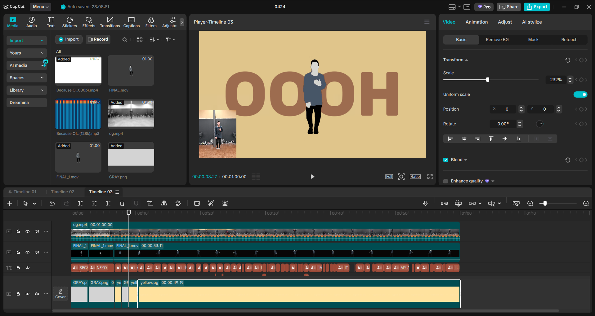

Step 01
Select Source Material
Use the same video from the Final Preview section as the source material.
Project: Rotoscope
Frame-by-frame tracing workflow from source footage to final rendered output.
Output
A finished render of the project, shown here before the production pipeline and weekly review.
Disclaimer: This video was created for academic purposes only. Credits to URBAN DANCE CAMP https://www.youtube.com/watch?v=P3ggFO9vRoc
Pipeline
Each phase in the workflow that helped build the final rotoscope edit.
Step 01
Use the same video from the Final Preview section as the source material.
Step 02
Split footage into short segments to make detailed tracing manageable.

Step 03
Import clips in After Effects and set up compositions for each sequence.

Step 04
Use masks and tools to isolate forms and track shape changes over time.

Step 05
Apply fill effects and color hierarchy to define the visual style.

Step 06
Queue final composition and export the project in your selected format.

Step 07
Assemble exported clips, timing, and transitions in CapCut for the final edit.

Review
The timeline below shows how the step-by-step pipeline translated into project progress week by week.
Progress Log
A weekly timeline that highlights how the project evolved during production.
Started tracing workflow and established the core visual direction.
Improved timing and consistency in frame-to-frame tracing.
Expanded layering and cleanup for smoother motion output.
Refined colors and polished final compositing quality.
Final pass and delivery stage.
Project completion and final renders.
Additional polish and export tests; added new scene variations.
Streamlined hand-drawn tracing and motion matching across frames.
Fine-tuned animation timing and smoothing for better playback.
Polished color grading and compositing for final output consistency.
Completed export checks and reviewed playback on multiple devices.
Delivered the final rotoscope edit and documented the full workflow.